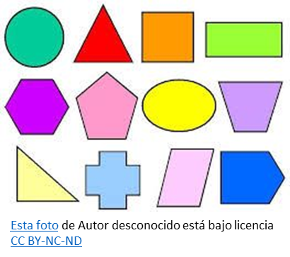

Geometría y Medida
| ¿Qué son figuras geométricas bidimensionales? |
|
Una figura bidimensional se define como una figura plana que se puede dibujar sobre una superficie plana. Tiene solo dos dimensiones: largo y ancho, sin grosor ni profundidad. Algunas de las figuras bidimensionales básicas son el rectángulo, el pentágono, el cuadrilátero, el círculo, el triángulo, el cuadrado, el octógono y el hexágono . Características principales:  Triángulos: Polígonos de tres lados. |